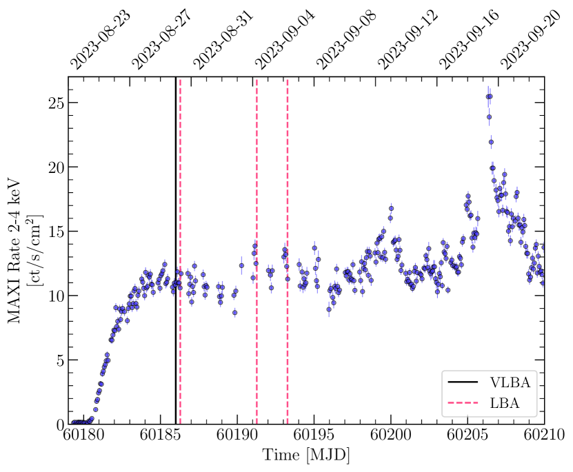
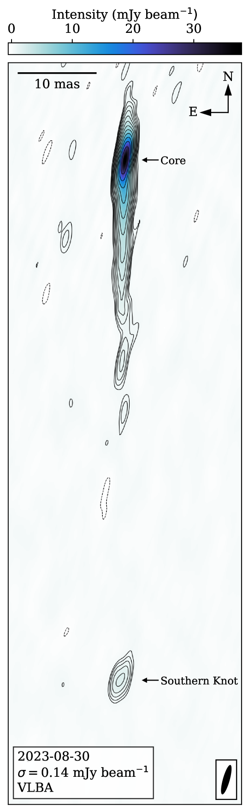
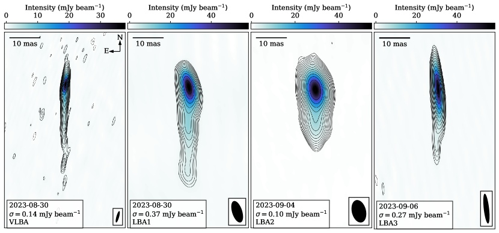
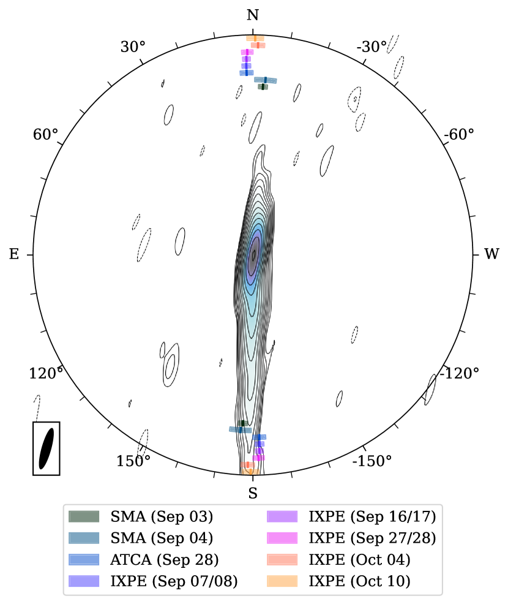
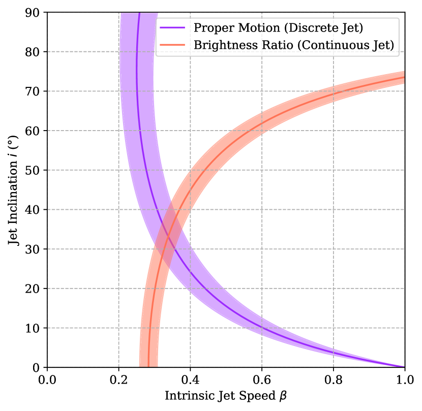
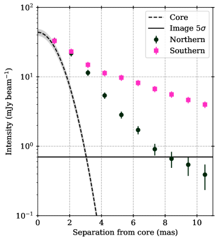

Swift J1727.8-1613 يمتلك أكبر نفاثة مستمرة محلولة رُصدت قط في ثنائي أشعة سينية
الملخص
أشارت قياسات الاستقطاب متعددة الأطوال الموجية والرصدات الراديوية لـ Swift J1727.8-1613 في بداية فورته الحديثة عام 2023 إلى وجود نفاثة مدمجة لامعة مصطفّة في اتجاه الشمال-الجنوب، وهو ما لم يكن ممكنًا تأكيده دون صور ذات استبانة زاوية عالية. وباستخدام Very Long Baseline Array وLong Baseline Array، صورنا Swift J1727.8-1613 خلال الحالة الصلبة/المتوسطة الصلبة، فكشفنا عن لب لامع ونفاثة كبيرة ثنائية الجانبين ولا متناظرة ومحلولة. تمتد النفاثة في اتجاه الشمال-الجنوب، عند زاوية موضع مقدارها شرق الشمال. عند 8.4 GHz، يبلغ طول بنية النفاثة المحلولة كاملة AU، وتمتد النفاثة الجنوبية المقتربة مسافة AU من اللب، حيث إن  هي المسافة إلى المصدر و
هي المسافة إلى المصدر و هو ميل محور النفاثة بالنسبة إلى خط البصر. تكشف هذه الصور عن أكثر نفاثات ثنائيات الأشعة السينية المستمرة تحليلًا مكانيًا، وربما عن أكثر نفاثة مستمرة ممتدة فيزيائيًا في ثنائي أشعة سينية رُصدت حتى الآن. واستنادًا إلى نسبة سطوع النفاثتين المقتربة والمبتعدة، وضعنا حدًا أدنى لسرعة النفاثة الذاتية قدره
هو ميل محور النفاثة بالنسبة إلى خط البصر. تكشف هذه الصور عن أكثر نفاثات ثنائيات الأشعة السينية المستمرة تحليلًا مكانيًا، وربما عن أكثر نفاثة مستمرة ممتدة فيزيائيًا في ثنائي أشعة سينية رُصدت حتى الآن. واستنادًا إلى نسبة سطوع النفاثتين المقتربة والمبتعدة، وضعنا حدًا أدنى لسرعة النفاثة الذاتية قدره  وحدًا أعلى لميل النفاثة قدره . وفي رصدتنا الأولى، كشفنا أيضًا عقدة نفاثية منفصلة تخفت سريعًا على بعد mas جنوب اللب، بحركة ذاتية مقدارها mas hour-1، ونفسرها بأنها نتيجة صدمة داخلية في اتجاه مجرى النفاثة أو تفاعل بين النفاثة والوسط بين النجمي، لا نفاثة نسبية عابرة أُطلقت في بداية الفوران.
وحدًا أعلى لميل النفاثة قدره . وفي رصدتنا الأولى، كشفنا أيضًا عقدة نفاثية منفصلة تخفت سريعًا على بعد mas جنوب اللب، بحركة ذاتية مقدارها mas hour-1، ونفسرها بأنها نتيجة صدمة داخلية في اتجاه مجرى النفاثة أو تفاعل بين النفاثة والوسط بين النجمي، لا نفاثة نسبية عابرة أُطلقت في بداية الفوران.
1 المقدمة
تُعد ثنائيات الأشعة السينية منخفضة الكتلة ذات الثقوب السوداء (BH LMXBs) أنظمة مثالية لدراسة إطلاق النفاثات النسبية وصلتها بعمليات التراكم، وذلك لقربها وتغيرها على مقاييس زمنية بشرية. وترتبط خواص النفاثات النسبية بقوة بخواص تدفق التراكم الداخل، إذ يتطور كلاهما تطورًا كبيرًا وسريعًا أثناء الفورانات اللامعة.
تبدأ الفورانات النموذجية في ثنائيات الأشعة السينية منخفضة الكتلة ذات الثقوب السوداء بحالة صلبة صاعدة، حيث تهيمن على الانبعاث الراديوي نفاثة مدمجة وثابتة ومستمرة تشع إشعاعًا سنكروترونيًا وممتصة ذاتيًا جزئيًا (مثلًا Corbel et al., 2000; Fender, 2001). وتُخمَد هذه النفاثات في الحالة الصلبة11 1 نشير في هذه الرسالة كلها إلى هذه النفاثات المستمرة باسم ‘نفاثات الحالة الصلبة’ بسبب ارتباطها التاريخي بالحالة الصلبة، مع أنها يمكن أن تستمر إلى داخل الحالة المتوسطة الصلبة، لكنها لا تستمر أبدًا إلى داخل الحالة اللينة. مع تحرك المصدر نحو الانتقال إلى الحالة اللينة عبر حالات متوسطة، حيث غالبًا ما تُطلق مقذوفات نفاثية عابرة منفصلة ولامعة (انظر مثلًا Fender et al., 2004, لمراجعة عن النفاثات وفورانات ثنائيات الأشعة السينية). وغالبًا ما تسمى نفاثات الحالة الصلبة نفاثات مدمجة، بسبب ظهورها كمصادر نقطية لامعة ومدمجة في الرصدات ذات الاستبانة الزاوية العالية. لم تُرصد نفاثات الحالة الصلبة المحلولة إلا في عدد قليل من ثنائيات الأشعة السينية ذات الثقوب السوداء: ثنائي الأشعة السينية عالي الكتلة Cyg X-1 (Stirling et al., 2001)؛ وثنائيات الأشعة السينية منخفضة الكتلة GRS 1915+105 (Dhawan et al., 2000; Ribó et al., 2004)؛ وMAXI J1836-194 (Russell et al., 2015)؛ وMAXI J1820+070 (Tetarenko et al., 2021).
يمكن للرصدات ذات الاستبانة الزاوية العالية للنفاثات المحلولة في الحالة الصلبة أن توفر مسابر مستقلة لخواصها النفاثية الأساسية، مكملةً طرائق أخرى مثل دراسات التوقيت الراديوية وتحت الحمراء (مثلًا Kalamkar et al., 2016; Malzac et al., 2018; Tetarenko et al., 2019, 2021)، والقياسات الفلكية وقياسات إزاحة اللب (مثلًا Miller-Jones et al., 2021; Prabu et al., 2023)، والنمذجة الطيفية عريضة النطاق ودراسات الانكسار الطيفي (مثلًا Markoff et al., 2001; Corbel et al., 2002; Chaty et al., 2011; Gandhi et al., 2011; Russell et al., 2014a; Péault et al., 2019; Russell et al., 2020; Echiburú-Trujillo et al., 2024).
1.1 Swift J1727.8-1613
كُشف Swift J1727.8-1613 (ويشار إليه فيما يلي بـ J1727) لأول مرة في 2023 آب/أغسطس 24 بواسطة Swift/BAT (Page et al., 2023)، وكشفت رصدات الأشعة السينية اللاحقة أنه مرشح جديد لثنائي أشعة سينية منخفض الكتلة ذي ثقب أسود في الحالة الصلبة عند بداية فوران لامع (Kennea and Swift Team, 2023; Negoro et al., 2023a, b; Nakajima et al., 2023; O’Connor et al., 2023b, a; Castro-Tirado et al., 2023). وأشارت الرصدات البصرية إلى أن J1727 يضم ثقبًا أسود أوليًا مع نجم مرافق مبكر من النوع K، بفترة مدارية قدرها ساعة على مسافة kpc.
أظهرت الرصدات البصرية والقريبة من تحت الحمراء لـ J1727 خلال الحالة الصلبة الصاعدة في بداية الفوران أن المصدر كان يزداد احمرارًا، ربما بسبب بدء نفاثة مدمجة في الحالة الصلبة (Baglio et al., 2023). وأظهرت الرصدات الراديوية من Submillimetre Array (SMA)، وKarl G. Jansky Very Large Array (VLA)، وenhanced Multi Element Remotely Linked Interferometer (eMERLIN)، وAllen Telescope Array (ATA)، مصدرًا لامعًا غير محلول ذا طيف مسطح (Vrtilek et al., 2023; Miller-Jones et al., 2023; Baglio et al., 2023; Williams-Baldwin et al., 2023). وكشفت رصدات الاستقطاب عند أطوال موجية للأشعة السينية بواسطة Imaging X-ray Polarimetry Explorer (IXPE)، وعند أطوال موجية بصرية بواسطة تلسكوب Tohoku ذي 60 cm، وعند 230 GHz بواسطة SMA، وعند 5.5 و9 GHz بواسطة Australian Telescope Compact Array (ATCA)، أن J1727 مستقطب عبر الطيف الكهرومغناطيسي، بزاوية موضع منسجمة مع اصطفاف في اتجاه الشمال-الجنوب (Dovciak et al., 2023; Kravtsov et al., 2023; Veledina et al., 2023; Vrtilek et al., 2023; Ingram et al., 2023). وأشارت هذه الرصدات إلى أن J1727 يمتلك نفاثة لامعة ومدمجة في الحالة الصلبة مصطفّة في اتجاه الشمال-الجنوب.
في هذه الرسالة نعرض أربع رصدات VLBI بواسطة Very Long Baseline Array (VLBA) وLong Baseline Array (LBA)، تكشف النفاثة الشمالية-الجنوبية شديدة الامتداد والمحلولة لـ J1727 خلال الحالة الصلبة/المتوسطة الصلبة، إضافة إلى عقدة نفاثية منفصلة ظاهريًا في اتجاه مجرى النفاثة. في القسم 2 نفصل رصداتنا وإجراءات المعايرة والتصوير، وفي القسم 3 نعرض صورنا ونجري تحليلًا للنفاثة، ثم نناقش ذلك في القسم 4.
2 الرصد والمعايرة والتصوير
عقب بداية الفوران وكشف نظير راديوي لامع (Miller-Jones et al., 2023)، رصدنا J1727 بواسطة VLBA (رمز المشروع BM538) عند 8.37 GHz في 2023 آب/أغسطس 30، ضمن برنامج Jet Acceleration and Collimation Probe Of Transient X-Ray Binaries (JACPOT XRB؛ Miller-Jones et al., 2011b). وبعد تلك الرصدة، رصدنا بعد ساعة بواسطة LBA (رمز المشروع V456) عند 8.44 GHz، ثم مرتين إضافيتين في 2023 أيلول/سبتمبر 04 وأيلول/سبتمبر 06. يوضح الشكل 1 توقيت رصداتنا أثناء بداية الفوران كما رآته مهمة Monitor of All-sky X-ray Image (MAXI22 2 http://maxi.riken.jp/؛ Matsuoka et al., 2009). ويمكن العثور على تفاصيل الرصد في الجدول 1. وستُعرض رصدات VLBI إضافية لتطور J1727 طوال فورانه في ورقة مستقبلية (Wood et al. قيد الإعداد).
| Label | Date | Time | MJD | Telescope | Observation | Frequency | Bandwidth | Stations† |
|---|---|---|---|---|---|---|---|---|
| (2023) | (UTC) | (Midpoint) | Code | (GHz) | (MHz) | |||
| VLBA | 30 Aug | 00:32:46–03:20:37 | 60186.08 | VLBA | BM538A | 8.37 | 512 | FD,HN,KP,LA, |
| MK,NL,OV,SC | ||||||||
| LBA1 | 30 Aug | 07:05:56–12:46:35 | 60186.41 | LBA | V456H | 8.44 | 64 | CD,HB,KE,MP, |
| PA,WW | ||||||||
| LBA2 | 04 Sep | 06:35:56–12:19:59 | 60191.39 | LBA | V456I | 8.44 | 64 | AT,CD,HB,KE, |
| MP,PA,WW | ||||||||
| LBA3 | 06 Sep | 06:36:02–12:19:59 | 60193.39 | LBA | V456J | 8.44 | 64 | AT,CD,MP,PA, |
| WW |
† محطات LBA: CD=Ceduna، HB=Hobart 12m، KE=Katherine، MP=Mopra، PA=Parkes، WW=Warkworth 30m، AT=ATCA

بالنسبة إلى VLBA، استخدمنا ICRF J174358.8-035004 (J1743-0350) كاشفًا للأهداب، وICRF J172134.6-162855 (J1721-1628) مصدرًا مرجعيًا للطور، وICRF J172446.9-144359 (J1724-2914) مصدر تحقق (Charlot et al., 2020). رصدنا كتلًا جيوديسية (Reid et al., 2009) لمدة  30 دقيقة في بداية الرصدة ونهايتها لتحسين المعايرة الفلكية. وبالنسبة إلى LBA، استخدمنا ICRF J192451.0-291430 (B1921-293؛ Charlot et al., 2020) كاشفًا للأهداب. ولتعظيم نسبة الإشارة إلى الضجيج على خطوط القاعدة الطويلة في معايرة الطور، بدّلنا مصدر مرجع الطور ومصدر التحقق في LBA. رُبطت البيانات باستخدام مترابط DiFX البرمجي (Deller et al., 2007, 2011)، وعُيرت وفق الإجراءات القياسية ضمن Astronomical Image Processing System (aips، الإصدار 31DEC22؛ Wells, 1985; Greisen, 2003). بعد معايرة الكسب الخارجية القياسية، أجرينا عدة جولات من الرسم الهجين لمصدر مرجع الطور لاشتقاق حلول الطور والتأخير والمعدل المتغيرة زمنيًا، ثم استنبطناها إلى J1727. وأجرينا أيضًا جولة واحدة من المعايرة الذاتية للسعة للحصول على أدق معايرة لكسب السعة المتغير زمنيًا، وطبقناها على J1727. ولمطابقة مقاييس كثافة الفيض بين VLBA وLBA، استخدمنا خريطة VLBA لـ J1724-2914 لاشتقاق حل عالمي لكسب السعة لكل هوائي LBA IF واستقطاب من أجل قياس مكاسب السعة القبلية المقدرة من كثافات الفيض المكافئة للنظام في السمت. واستخدمنا مسوحات VLBA وLBA لـ J1721-1628 للتأكد من أن مقياس كثافة الفيض في LBA يطابق VLBA ضمن 5%.
30 دقيقة في بداية الرصدة ونهايتها لتحسين المعايرة الفلكية. وبالنسبة إلى LBA، استخدمنا ICRF J192451.0-291430 (B1921-293؛ Charlot et al., 2020) كاشفًا للأهداب. ولتعظيم نسبة الإشارة إلى الضجيج على خطوط القاعدة الطويلة في معايرة الطور، بدّلنا مصدر مرجع الطور ومصدر التحقق في LBA. رُبطت البيانات باستخدام مترابط DiFX البرمجي (Deller et al., 2007, 2011)، وعُيرت وفق الإجراءات القياسية ضمن Astronomical Image Processing System (aips، الإصدار 31DEC22؛ Wells, 1985; Greisen, 2003). بعد معايرة الكسب الخارجية القياسية، أجرينا عدة جولات من الرسم الهجين لمصدر مرجع الطور لاشتقاق حلول الطور والتأخير والمعدل المتغيرة زمنيًا، ثم استنبطناها إلى J1727. وأجرينا أيضًا جولة واحدة من المعايرة الذاتية للسعة للحصول على أدق معايرة لكسب السعة المتغير زمنيًا، وطبقناها على J1727. ولمطابقة مقاييس كثافة الفيض بين VLBA وLBA، استخدمنا خريطة VLBA لـ J1724-2914 لاشتقاق حل عالمي لكسب السعة لكل هوائي LBA IF واستقطاب من أجل قياس مكاسب السعة القبلية المقدرة من كثافات الفيض المكافئة للنظام في السمت. واستخدمنا مسوحات VLBA وLBA لـ J1721-1628 للتأكد من أن مقياس كثافة الفيض في LBA يطابق VLBA ضمن 5%.
صوّرنا J1727 ضمن aips باستخدام خوارزمية CLEAN (Högbom, 1974) مع ترجيح طبيعي لتعظيم الحساسية، وأجرينا جولات متعددة من المعايرة الذاتية للطور فقط تلتها جولة واحدة من المعايرة الذاتية للسعة للحصول على الصور النهائية.
3 الصور والتحليل

 ، و
، و هو ضجيج الجذر التربيعي المتوسط المبين في أسفل يسار الصورة. يبين القطع الناقص في الزاوية اليمنى السفلى الحزمة التركيبية. تُظهر الصورة لبًا لامعًا مع نفاثتين ثنائيتين عاليتَي التحليل (
هو ضجيج الجذر التربيعي المتوسط المبين في أسفل يسار الصورة. يبين القطع الناقص في الزاوية اليمنى السفلى الحزمة التركيبية. تُظهر الصورة لبًا لامعًا مع نفاثتين ثنائيتين عاليتَي التحليل ( mas) ولا متناظرتين ظاهريًا تمتدان في اتجاه الشمال-الجنوب، وعقدة نفاثية منفصلة إلى الجنوب على مسافة فاصلة قدرها
mas) ولا متناظرتين ظاهريًا تمتدان في اتجاه الشمال-الجنوب، وعقدة نفاثية منفصلة إلى الجنوب على مسافة فاصلة قدرها  mas من اللب عند زاوية موضع ° شرق الشمال.
mas من اللب عند زاوية موضع ° شرق الشمال.يبين الشكل 2 صورة VLBA لـ J1727 من 2023 آب/أغسطس 30، التي تكشف لبًا لامعًا مع نفاثة عالية التحليل ولا متناظرة تمتد في اتجاه الشمال-الجنوب، وعقدة نفاثية منفصلة إلى الجنوب على مسافة فاصلة قدرها mas من اللب (حسّناها لاحقًا بنمذجة الرؤى). يبلغ الطول الكلي للبنية المستمرة الممتدة  mas، وتمتد النفاثتان الجنوبية والشمالية
mas، وتمتد النفاثتان الجنوبية والشمالية  و
و mas من اللب على الترتيب.
mas من اللب على الترتيب.
قسنا موضع اللب في صورة VLBA بملاءمة مصدر نقطي إلى ألمع منطقة من النفاثة باستخدام مهمة aips المسماة JMFIT، قبل تطبيق أي معايرة ذاتية للطور. وأعطى ذلك موضعًا (في إطار FK5 المرجعي واعتدال J2000) هو
حيث إن الأخطاء هي الأخطاء الإحصائية  التي أبلغ عنها AIPS مضافةً تربيعيًا إلى الأخطاء الفلكية النظامية المقدرة لـ VLBA (Pradel et al., 2006)، مع افتراض أن موضع J1721-1628 هو .
التي أبلغ عنها AIPS مضافةً تربيعيًا إلى الأخطاء الفلكية النظامية المقدرة لـ VLBA (Pradel et al., 2006)، مع افتراض أن موضع J1721-1628 هو .
بملاءمة زاوية موضع ثابتة لمواقع مكوّنات CLEAN ذات كثافة الفيض الموجبة في رصدات VLBA، قسنا زاوية موضع النفاثة فوجدناها شرق الشمال. وهذا منسجم مع زاوية الموضع من اللب إلى العقدة النفاثية الجنوبية المنفصلة. والنفاثة غير محلولة عموديًا على محور النفاثة على طولها كله؛ لذلك، وبناءً على حجم الحزمة وطول النفاثة، نضع حدًا أعلى لنصف زاوية الفتح الظاهرية للنفاثة قدره .
في الشكل 3 نعرض الرصدات الأربع كلها للنفاثة المحلولة في J1727. وتُظهر هذه الرصدات على نحو مماثل لبًا لامعًا مع نفاثة ممتدة عند زاوية الموضع نفسها، إلا أن صور LBA ذات استبانة زاوية أضعف من صورة VLBA، ولذلك لا نحل إلا النفاثة الجنوبية. لا نرى العقدة النفاثية الجنوبية المنفصلة في أي من رصدات LBA. نلخص كثافات الفيض العظمى والمتكاملة المرصودة في الجدول 2. وقد انخفضت كثافة الفيض المتكاملة للنفاثة من الرصدة الأولى إلى الرصدتين الأخيرتين.
كان LBA أكثر حساسية قليلًا للانبعاث المنتشر من VLBA، وهذا يفسر سبب استرجاعنا قدرًا أكبر قليلًا من الانبعاث عند طرف النفاثة الجنوبية في أول رصدة LBA مقارنةً بـ VLBA. ومن خلال تصوير رصدة VLBA باستخدام أقصر خطوط القاعدة فقط، لم نتمكن من كشف أي انبعاث منتشر إضافي بين النفاثة الممتدة والعقدة النفاثية المنفصلة. ونلاحظ أن VLBA كان يفتقد محطة Pie Town، ومن ثم كان يفتقر إلى بضعة خطوط قاعدة قصيرة أساسية، ما قد يفسر سبب كشفنا الجزئي فقط للانبعاث المنتشر عند طرف النفاثة الجنوبية المستمرة، مسببًا مظهرها العقدي. تتوافق كثافات الفيض المقاسة من أول رصدتين لدينا مع رصدات eMERLIN وATA في 2023 آب/أغسطس 29 وآب/أغسطس 30 على الترتيب (Williams-Baldwin et al., 2023; Bright et al., 2023)، ضمن لايقين معايرة السعة البالغ  10%، مما يشير إلى أننا استرجعنا معظم انبعاث نفاثة J1727 في رصداتنا.
10%، مما يشير إلى أننا استرجعنا معظم انبعاث نفاثة J1727 في رصداتنا.

 mJy beam-1 حيث ، و
mJy beam-1 حيث ، و هو ضجيج الجذر التربيعي المتوسط المبين في أسفل يسار كل صورة. يبين القطع الناقص في الزاوية اليمنى السفلى من كل صورة الحزمة التركيبية. يمكن العثور على معاملات الرصد في الجدول 1، ويمكن العثور على معاملات الصورة في الجدول 2. تُحل النفاثة عبر عهود متعددة أثناء الحالة الصلبة، لكنها تبدو أقل امتدادًا مع انتقال المصدر نحو الحالة المتوسطة الصلبة.
هو ضجيج الجذر التربيعي المتوسط المبين في أسفل يسار كل صورة. يبين القطع الناقص في الزاوية اليمنى السفلى من كل صورة الحزمة التركيبية. يمكن العثور على معاملات الرصد في الجدول 1، ويمكن العثور على معاملات الصورة في الجدول 2. تُحل النفاثة عبر عهود متعددة أثناء الحالة الصلبة، لكنها تبدو أقل امتدادًا مع انتقال المصدر نحو الحالة المتوسطة الصلبة. التي أبلغ عنها aips. ويُعطى الخطأ الإحصائي في كثافة الفيض المتكاملة بـ ، حيث
التي أبلغ عنها aips. ويُعطى الخطأ الإحصائي في كثافة الفيض المتكاملة بـ ، حيث  هو ضجيج الجذر التربيعي المتوسط في الصورة و هو عدد الحزم المستقلة في منطقة التكامل.
هو ضجيج الجذر التربيعي المتوسط في الصورة و هو عدد الحزم المستقلة في منطقة التكامل.| Observation | Integrated Flux Density | Core Flux Density | Beam Dimensions | Beam Position Angle |
|---|---|---|---|---|
| (mJy) | (mJy) | (mas) x (mas) | (° East of North) | |
| VLBA | 3.9 x 0.9 | -15.7 | ||
| LBA1 | 7.3 x 3.3 | 17.7 | ||
| LBA2 | 7.6 x 4.7 | 14.0 | ||
| LBA3 | 9.9 x 1.7 | 6.5 |
بالنسبة إلى نفاثات متناظرة ومستمرة ومستقرة مائلة إلى خط البصر، ينبغي أن تكون النفاثتان المقتربة والمبتعدة متناظرتين تقريبًا، إلا أن السطوع السطحي الظاهري لهاتين النفاثتين سيكون لا متناظرًا بسبب الزيغ النسبي. وتُعطى نسبة كثافة الفيض بين النفاثات المستمرة المقتربة والمبتعدة بالعلاقة
| (1) |
حيث إن و هما كثافتا فيض النفاثتين عند مسافة زاوية متساوية من اللب، و هو الدليل الطيفي للنفاثتين (
هو الدليل الطيفي للنفاثتين ( ؛ Ryle and Longair, 1967; Scheuer and Readhead, 1979; Mirabel and Rodríguez, 1999). سينخفض الانبعاث من النفاثة المبتعدة دون حد ضجيج الرصد عند مسافة فاصلة أصغر من المكون المقترب، وهذا يفسر اللاتناظر المرئي في صورنا إذا كانت النفاثة الشمالية مبتعدة والجنوبية مقتربة.
؛ Ryle and Longair, 1967; Scheuer and Readhead, 1979; Mirabel and Rodríguez, 1999). سينخفض الانبعاث من النفاثة المبتعدة دون حد ضجيج الرصد عند مسافة فاصلة أصغر من المكون المقترب، وهذا يفسر اللاتناظر المرئي في صورنا إذا كانت النفاثة الشمالية مبتعدة والجنوبية مقتربة.
بما أن النفاثة المبتعدة لم تُحل إلا في رصدة VLBA، استخدمنا هذه الرصدة لتقييد نسبة كثافة الفيض. انتهت مكوّنات CLEAN للنفاثة الشمالية عند مسافة فاصلة mas من اللب، ولذلك كملنا كثافة فيض مكوّنات CLEAN على امتداد النفاثتين الشمالية والجنوبية ابتداءً من مسافة فاصلة 3-6.5 mas من اللب. اخترنا الحد الأدنى 3 mas لتجنب انبعاث اللب غير المحلول (انظر الملحق A). وأنتج ذلك نسبة كثافة فيض ، ما أعطى ، بافتراض دليل طيفي قدره (إذ ينبغي أن تكون النفاثة الممتدة رقيقة بصريًا بعد اللب).
3.1 نمذجة العقدة الجنوبية
من خلال تصوير النصفين الأول والثاني من رصدة VLBA كلًا على حدة، وجدنا أن العقدة الجنوبية بدت كأنها تتحرك مبتعدة عن اللب. وتمكنا من قياس هذه الحركة بدقة بتنفيذ إجراء ملاءمة النموذج المعتمد على الزمن الموصوف في Wood et al. (2023)، حيث لاءمنا نموذجًا متطورًا زمنيًا مباشرةً مع الرؤى المقاسة باستخدام خوارزمية الاستدلال البايزي لأخذ العينات المتداخلة (Skilling, 2006) المنفذة في حزمة Python dynesty33
3
https://github.com/joshspeagle/dynesty (Speagle, 2020). قبل نمذجة العقدة، طرحنا مكوّنات CLEAN للنفاثة الممتدة من الرؤى لإنشاء رصدة متبقية لا تحتوي إلا على العقدة الجنوبية. ثم لاءمنا نموذجًا تحليليًا مباشرةً مع هذه الرؤى المتبقية، مؤلفًا من غاوسي دائري ذي حجم ثابت يتحرك بعيدًا عن اللب عند زاوية موضع ثابتة ( ) وبسرعة ثابتة (). وسمحنا لكثافة فيض هذا المكون (
) وبسرعة ثابتة (). وسمحنا لكثافة فيض هذا المكون ( ) بأن تتغير خطيًا داخل الرصدة. تطورت كثافة الفيض على النحو
) بأن تتغير خطيًا داخل الرصدة. تطورت كثافة الفيض على النحو
| (2) |
وتطور موضع العقدة بالنسبة إلى اللب على النحو
| (3) |
و
| (4) |
حيث إن  هو الزمن المرجعي المختار بوصفه منتصف الرصدة التقريبي (02:00:00 UTC في 2023 آب/أغسطس 30th)، و هي مسافة العقدة النفاثية من اللب (بوحدة mas) عند الزمن المرجعي، و و في اتجاهي R.A. الموجب وDec. على الترتيب (بوحدة mas). وضعنا قبليات غاوسية على مسافة العقدة النفاثية عند الزمن المرجعي وعلى زاوية موضعها، استنادًا إلى موقع العقدة في الصورة. ووضعنا قبليات منتظمة على جميع المعاملات الأخرى. تُسرد توزيعات القبليات في الجدول 3 إلى جانب تقديرات البعديات. جرّبنا أيضًا نماذج تضمنت تمددًا خطيًا للعقدة النفاثية، لكننا وجدنا أن سرعة التمدد متوافقة مع الصفر. وبالمثل، لم نتمكن من قياس أي تباطؤ داخل الرصدة. ووجدنا أيضًا أن النماذج ذات اضمحلالات كثافة الفيض الأسية أو على شكل قانون قوى لا يمكن تمييزها عن نموذج الاضمحلال الخطي على المقياس الزمني للرصدة البالغة
هو الزمن المرجعي المختار بوصفه منتصف الرصدة التقريبي (02:00:00 UTC في 2023 آب/أغسطس 30th)، و هي مسافة العقدة النفاثية من اللب (بوحدة mas) عند الزمن المرجعي، و و في اتجاهي R.A. الموجب وDec. على الترتيب (بوحدة mas). وضعنا قبليات غاوسية على مسافة العقدة النفاثية عند الزمن المرجعي وعلى زاوية موضعها، استنادًا إلى موقع العقدة في الصورة. ووضعنا قبليات منتظمة على جميع المعاملات الأخرى. تُسرد توزيعات القبليات في الجدول 3 إلى جانب تقديرات البعديات. جرّبنا أيضًا نماذج تضمنت تمددًا خطيًا للعقدة النفاثية، لكننا وجدنا أن سرعة التمدد متوافقة مع الصفر. وبالمثل، لم نتمكن من قياس أي تباطؤ داخل الرصدة. ووجدنا أيضًا أن النماذج ذات اضمحلالات كثافة الفيض الأسية أو على شكل قانون قوى لا يمكن تمييزها عن نموذج الاضمحلال الخطي على المقياس الزمني للرصدة البالغة  ساعة.
ساعة.
| Parameter | Prior Distribution | Posterior Estimate |
|---|---|---|
| (mJy) | ||
| (mJy hour-1) | ||
| FWHM (mas) | ||
| (mas) | ||
| (mas hour-1) | ||
| (° East of North) |
وجدنا أن العقدة محلولة بوضوح، وكانت تتحرك مبتعدة عن اللب بحركة ذاتية قدرها mas hour-1، عند زاوية موضع متوافقة مع زاوية موضع النفاثة الممتدة. ووجدنا أن العقدة النفاثية كانت تضمحل سريعًا خلال الرصدة، وهذا يفسر عدم رؤيتنا للعقدة في أول رصدة LBA بعد  ساعة. وباستخدام مسافة العقدة وسرعتها البالستية، حسبنا تاريخ قذف MJD ، مع أننا نجادل في القسم 4.4 بأن هذه العقدة ليست نفاثة عابرة منفصلة. وتعطي مسافة العقدة النفاثية وحجمها FWHM في رصدة VLBA (انظر الجدول 3) نصف زاوية فتح إسقاطية قدرها °.
ساعة. وباستخدام مسافة العقدة وسرعتها البالستية، حسبنا تاريخ قذف MJD ، مع أننا نجادل في القسم 4.4 بأن هذه العقدة ليست نفاثة عابرة منفصلة. وتعطي مسافة العقدة النفاثية وحجمها FWHM في رصدة VLBA (انظر الجدول 3) نصف زاوية فتح إسقاطية قدرها °.
للتأكد من أن عملية المعايرة الذاتية لم تكن تفسد البيانات أو تولّد فيها أي تباين زائف، أجرينا عملية الطرح والنمذجة على نسخ من الرصدة من دون أي معايرة ذاتية، وبعد معايرة ذاتية للطور فقط، وبعد معايرة ذاتية للسعة والطور. وجدنا أن موضع العقدة وحركتها كانا متوافقين بين سيناريوهات المعايرة الذاتية الثلاثة كلها، وأن الحجم وكثافة الفيض تغيرا قليلًا بعد المعايرة الذاتية للسعة. ووجدنا أيضًا دليلًا هامشيًا على التمدد في الرصدة المحتوية على معايرة ذاتية للسعة، غير أننا لا نورد إلا معاملات النموذج من الملاءمة إلى الرصدة المحتوية على معايرة ذاتية للطور فقط، لأننا لم نستطع تأكيد أن المعايرة الذاتية للسعة لم تكن تولّد بنية وتباينًا زائفين في العقدة النفاثية.
4 المناقشة
رصدنا النفاثة العالية التحليل لـ Swift J1727.8-1613 عبر أربعة عهود بواسطة VLBA وLBA. النفاثة مستمرة وممتدة ولا متناظرة ظاهريًا ومصطفة في اتجاه الشمال-الجنوب. وفي الرصدة الأولى وُجدت أيضًا عقدة نفاثية منفصلة تتحرك مبتعدة عن اللب إلى الجنوب، ولا تظهر في الرصدات اللاحقة. وتمكنا من تقييد حركة العقدة النفاثية وتغير كثافة فيضها بواسطة ملاءمة نموذج للرؤى معتمد على الزمن.
4.1 موضع اللب
قسنا موضع اللب اللامع في صورة VLBA، وهو على الأرجح متوافق مع موضع الثقب الأسود المركزي. في Cyg X-1، حيث تمتص الرياح النجمية القوية للمرافق فائق العملقة قاعدة النفاثة امتصاصًا حرًا-حرًا شديدًا (انظر مثلًا Miller-Jones et al., 2021)، تقع المسافة بين الثقب الأسود والغلاف الضوئي السنكروتروني (حيث ينشأ انبعاث “اللب” المدمج) بين cm عند 8.4 GHz (Zdziarski et al., 2023). وبأخذ قياس مسافة الغلاف الضوئي () مع اللمعانية بوصفه في الحسبان (Heinz, 2006; Zdziarski et al., 2023)، فإن ذلك سيقابل مسافة لا تزيد على 1-3 mas باتجاه مجرى النفاثة من موضع الثقب الأسود في J1727، وهي داخل حزمة رصدة VLBA المسقطة على امتداد محور النفاثة. افترضنا هنا أن J1727 يمتلك زاوية فتح وزاوية ميل وسرعة نفاثة مشابهة لـ Cyg X-1. إذا كان ميل النفاثة في J1727 أكبر من التطبيع في Zdziarski et al. (2023) (°) فستكون هذه المسافة أصغر. وبما أن J1727 يحتوي على مرافق قزم مبكر من النوع K (Mata Sánchez et al., 2024)، فإن النفاثة لا تُمتص بواسطة ريح نجمية قوية، ومن ثم فإن هذا حد أعلى محافظ جدًا للمسافة من الثقب الأسود إلى الغلاف الضوئي للنفاثة.
كذلك لم نر أي دليل على إزاحة منهجية في موضع اللب مع خفوت النفاثة. ونلاحظ أننا اضطررنا إلى تصحيح إزاحة طفيفة بسبب اختلاف معايرات الطور بين VLBA وLBA. وأظهرت الرصدات اللاحقة بواسطة VLBA في وقت متأخر من الفوران، حين تقلصت النفاثة الممتدة وأُطلقت مقذوفات عابرة، عدم وجود إزاحة مهمة في موقع اللب (Wood et al. قيد الإعداد). ويشير ذلك إلى أن المسافة بين الغلاف الضوئي والثقب الأسود المركزي ليست مهمة مقارنة بحجم حزمة الاستعادة.
تؤدي أي إزاحة في اللب في J1727 إلى زيادة نسبة السطوع، ما يزيد أساسًا سرعة النفاثة الذاتية عند ميل نفاثة معين (أي إن قيد منحنى نسبة السطوع ينزاح يمينًا في الشكل 5). وعلى الرغم من أننا لا نعتقد بوجود دليل على إزاحة مهمة في اللب، فإننا نورد هنا التغيرات لإزاحة قدرها 1 mas. في مثل هذه الحالة ستزداد نسبة السطوع المقدرة إلى ، و، مما يزيد قليلًا الحد الأدنى لسرعة النفاثة الذاتية ويخفض الحد الأعلى لميل النفاثة (انظر القسم 4.3). ونؤكد أن مثل هذا التغير لا يؤثر بقوة في تفسيرات هذه الورقة.
4.2 النفاثة المحلولة
صورة VLBA لـ J1727 (الشكل 2) هي أكثر صورة تحليلًا لنفاثة ثنائي أشعة سينية في الحالة الصلبة. وCyg X-1 وGRS 1915+105 هما الثنائيان الآخران الوحيدان للأشعة السينية اللذان يمتلكان نفاثة حالة صلبة حُلّت في صورة عبر حزم تركيبية متعددة (Stirling et al., 2001; Dhawan et al., 2000; Ribó et al., 2004). وبافتراض مسافة إلى J1727 مقدارها  kpc (Mata Sánchez et al., 2024)، كان حجم بنية النفاثة المحلولة كلها (بما في ذلك النفاثة المبتعدة) AU، وكان امتداد النفاثة المقتربة AU، أو (بافتراض كتلة ثقب أسود قدرها Kreidberg et al., 2012). وأشارت رصدات استقطاب الأشعة السينية لـ J1727 بواسطة IXPE إلى أن ميل تدفق التراكم الداخلي يقع بين (Veledina et al., 2023). ومن ثم فإن الامتداد الفيزيائي للنفاثة المقتربة المحلولة في J1727 في 2023 آب/أغسطس 30th يقع بين AU، أو .
kpc (Mata Sánchez et al., 2024)، كان حجم بنية النفاثة المحلولة كلها (بما في ذلك النفاثة المبتعدة) AU، وكان امتداد النفاثة المقتربة AU، أو (بافتراض كتلة ثقب أسود قدرها Kreidberg et al., 2012). وأشارت رصدات استقطاب الأشعة السينية لـ J1727 بواسطة IXPE إلى أن ميل تدفق التراكم الداخلي يقع بين (Veledina et al., 2023). ومن ثم فإن الامتداد الفيزيائي للنفاثة المقتربة المحلولة في J1727 في 2023 آب/أغسطس 30th يقع بين AU، أو .
حُلّت النفاثتان ثنائيتا الجانب في كل من GRS 1915+105 وCyg X-1 عند 8.4 GHz (Dhawan et al., 2000; Ribó et al., 2004; Miller-Jones et al., 2021). وكُشفت النفاثة المقتربة في Cyg X-1 حتى امتداد  AU (Stirling et al., 2001; Miller-Jones et al., 2021). في 1997، كُشفت النفاثة المقتربة في GRS 1915+105 حتى AU (محدثة بأحدث قيد للمسافة؛ Dhawan et al., 2000; Reid and Miller-Jones, 2023)، وفي 2003 قيس طول النفاثة بأنه AU (Ribó et al., 2004, مع كون الحد الأعلى عائدًا إلى الاتساع بالتشتت بين النجمي). وحُلّت النفاثة المقتربة في MAXI J1836-194 (ذات المسافة والميل ضعيفي التقييد) هامشيًا عند 8.4 GHz خلال اضمحلال فورانها عام 2011، بامتداد AU (Russell et al., 2014a, b, 2015). وحُلّت نفاثة الحالة الصلبة المقتربة في MAXI J1820+070 هامشيًا عند 15 GHz، بما يقابل امتدادًا فيزيائيًا قدره
AU (Stirling et al., 2001; Miller-Jones et al., 2021). في 1997، كُشفت النفاثة المقتربة في GRS 1915+105 حتى AU (محدثة بأحدث قيد للمسافة؛ Dhawan et al., 2000; Reid and Miller-Jones, 2023)، وفي 2003 قيس طول النفاثة بأنه AU (Ribó et al., 2004, مع كون الحد الأعلى عائدًا إلى الاتساع بالتشتت بين النجمي). وحُلّت النفاثة المقتربة في MAXI J1836-194 (ذات المسافة والميل ضعيفي التقييد) هامشيًا عند 8.4 GHz خلال اضمحلال فورانها عام 2011، بامتداد AU (Russell et al., 2014a, b, 2015). وحُلّت نفاثة الحالة الصلبة المقتربة في MAXI J1820+070 هامشيًا عند 15 GHz، بما يقابل امتدادًا فيزيائيًا قدره  AU عند 8.4 GHz (مع قياس الحجم كـ ؛ Blandford and Königl, 1979; Tetarenko et al., 2021).
AU عند 8.4 GHz (مع قياس الحجم كـ ؛ Blandford and Königl, 1979; Tetarenko et al., 2021).
كُشفت نفاثة الحالة الصلبة في J1727 حتى امتداد أبعد من نفاثات الحالة الصلبة في Cyg X-1، وGRS 1915+105 في توهجه عام 1997، وMAXI J1820+070. واعتمادًا على الميل، قد تكون نفاثة الحالة الصلبة المحلولة في J1727 أكبر أيضًا من نفاثة GRS 1915+105 خلال توهجه عام 2003، ومن نفاثة الحالة الصلبة المتلاشية في MAXI J1836-194، ولذلك ربما امتلك J1727 أكثر نفاثة حالة صلبة امتدادًا رُصدت قط في ثنائي أشعة سينية. إن امتداد نفاثة حالة صلبة محلولة هو المسافة من اللب التي يهبط عندها السطوع السطحي لمادة النفاثة المتمددة دون حد الضجيج. ويعتمد ذلك على الخواص الفيزيائية للنفاثة (مثل زاوية الفتح وسرعة النفاثة ومحتواها وشدة المجال المغناطيسي وبنيتها الداخلية)، وكذلك على معاملات الرصد، ولا سيما الاستبانة الزاوية والحساسية الكلية والحساسية للبنية المنتشرة.
زاوية الموضع التي قسناها لكل من النفاثة الممتدة والعقدة النفاثية متوافقة مع زوايا موضع الاستقطاب الراديوي والمليمتري واستقطاب الأشعة السينية في J1727، ونقارنها في الشكل 4. وهذه القياسات متوافقة أيضًا مع اتجاه الاستقطاب البصري الأقل تقييدًا (Kravtsov et al., 2023). وتشير هذه القياسات إلى أن البنى في تدفق التراكم وقاعدة النفاثة والجزء الهابط من النفاثة مصطفة ضمن بضع درجات في مستوى السماء.

 المبلغ عنها، وتُظهر الخطوط قيمها الاسمية. تمتد رصدات الاستقطاب عبر الحالتين الصلبة والمتوسطة الصلبة، وهي متوافقة مع الاتجاه الشمالي-الجنوبي للنفاثة المحلولة في رصدات VLBI التي أجريناها.
المبلغ عنها، وتُظهر الخطوط قيمها الاسمية. تمتد رصدات الاستقطاب عبر الحالتين الصلبة والمتوسطة الصلبة، وهي متوافقة مع الاتجاه الشمالي-الجنوبي للنفاثة المحلولة في رصدات VLBI التي أجريناها.بين الرصدات في 2023 آب/أغسطس 30th وأيلول/سبتمبر 4th و6th، أصبحت النفاثة المستمرة الممتدة أخفت وأقل امتدادًا، بينما بقي اللب ثابتًا نسبيًا. ونلاحظ أن مستوى الضجيج في الرصدات يتغير، ومن ثم فإن المسافة من اللب التي كان يمكننا عندها كشف نفاثة مطابقة في كل رصدة مختلفة. ولم تمتلك رصدات LBA لدينا استبانة زاوية وحساسية كافيتين لحل النفاثة المضادة، ولذلك لا يمكننا التعليق على كيفية تغير سرعة النفاثة مع خفوت النفاثة المدمجة. ولا يمكننا استخدام عدم كشف النفاثة المضادة لوضع حد أدنى لنسبة السطوع، إذ يمكن أن تكون النفاثة الشمالية في صورة VLBA محتواة بالكامل داخل حزمة رصدات LBA اللاحقة. وبالنظر إلى تغير استبانة الرصدات، لا يمكننا أيضًا مقارنة شدة الذروة للب غير المحلول بين العهود على نحو ذي معنى.
4.3 سرعات النفاثة الذاتية
من دون رصد نظير شمالي للعقدة النفاثية الجنوبية، لا نستطيع تقييد السرعة الذاتية وميل المصدر على نحو وحيد، لكن يمكننا تقييد التوليفات الممكنة من  و
و . ترتبط الحركة الذاتية للعقدة النفاثية المقتربة،
. ترتبط الحركة الذاتية للعقدة النفاثية المقتربة،  ، بالسرعة الذاتية للعقدة النفاثية،
، بالسرعة الذاتية للعقدة النفاثية،  ، بالعلاقة
، بالعلاقة
| (5) |
حيث إن  هي زاوية ميل النفاثة إلى خط البصر، و
هي زاوية ميل النفاثة إلى خط البصر، و هي المسافة إلى J1727 ( kpc؛ Mata Sánchez et al., 2024)، و
هي المسافة إلى J1727 ( kpc؛ Mata Sánchez et al., 2024)، و هي سرعة الضوء (Mirabel and Rodríguez, 1999). لا يمكننا استخدام عدم كشف نظير مبتعد لوضع حد أعلى على نسبة كثافة الفيض لتقييد ، لأننا نحتاج إلى قياس كثافات الفيض عندما تكون النفاثتان عند مسافات متساوية (أي عند العمر نفسه)، إذ تتغير سطوعات النفاثات أثناء تحركها في اتجاه المجرى (Miller-Jones et al., 2004).
هي سرعة الضوء (Mirabel and Rodríguez, 1999). لا يمكننا استخدام عدم كشف نظير مبتعد لوضع حد أعلى على نسبة كثافة الفيض لتقييد ، لأننا نحتاج إلى قياس كثافات الفيض عندما تكون النفاثتان عند مسافات متساوية (أي عند العمر نفسه)، إذ تتغير سطوعات النفاثات أثناء تحركها في اتجاه المجرى (Miller-Jones et al., 2004).
في الشكل 5 نرسم القيم الممكنة لـ  و
و لكل من النفاثة الممتدة والعقدة النفاثية، باستخدام المعادلتين 1 و5، على الترتيب. تضع هذه القيود حدًا أدنى للسرعة الذاتية لكل من النفاثة المستمرة والعقدة النفاثية المنفصلة قدره و، على الترتيب. وتعطي نسبة السطوع أيضًا حدًا أعلى لميل النفاثة قدره . ومع أنه ليس لازمًا أن تتشارك السرعة الذاتية نفسها، فإذا افترضنا أن العقدة النفاثية المنفصلة والنفاثة المستمرة الممتدة عند الميل نفسه (أي بافتراض عدم وجود مبادرة واسعة النطاق وسريعة لمحور النفاثة، كما في V404 Cygni؛ Miller-Jones et al., 2019)، فإن سرعتيهما الذاتيتين متوافقتان ضمن
لكل من النفاثة الممتدة والعقدة النفاثية، باستخدام المعادلتين 1 و5، على الترتيب. تضع هذه القيود حدًا أدنى للسرعة الذاتية لكل من النفاثة المستمرة والعقدة النفاثية المنفصلة قدره و، على الترتيب. وتعطي نسبة السطوع أيضًا حدًا أعلى لميل النفاثة قدره . ومع أنه ليس لازمًا أن تتشارك السرعة الذاتية نفسها، فإذا افترضنا أن العقدة النفاثية المنفصلة والنفاثة المستمرة الممتدة عند الميل نفسه (أي بافتراض عدم وجود مبادرة واسعة النطاق وسريعة لمحور النفاثة، كما في V404 Cygni؛ Miller-Jones et al., 2019)، فإن سرعتيهما الذاتيتين متوافقتان ضمن  في المجال . وفي مجال الميل الذي ترجحه قياسات استقطاب الأشعة السينية (؛ Veledina et al., 2023)، تتحرك العقدة النفاثية بالسرعة نفسها التي تتحرك بها النفاثة المستمرة أو بسرعة أبطأ منها.
في المجال . وفي مجال الميل الذي ترجحه قياسات استقطاب الأشعة السينية (؛ Veledina et al., 2023)، تتحرك العقدة النفاثية بالسرعة نفسها التي تتحرك بها النفاثة المستمرة أو بسرعة أبطأ منها.

 . نشتق هذه القيود من نسبة السطوع بين ذراعي النفاثة الممتدة المقتربة والمبتعدة (المعادلة 1) ومن الحركة الذاتية للعقدة النفاثية الجنوبية (المعادلة 5). تضع نسبة السطوع حدًا أعلى لميل النفاثة وحدًا أدنى للسرعة الذاتية للنفاثة المستمرة.
. نشتق هذه القيود من نسبة السطوع بين ذراعي النفاثة الممتدة المقتربة والمبتعدة (المعادلة 1) ومن الحركة الذاتية للعقدة النفاثية الجنوبية (المعادلة 5). تضع نسبة السطوع حدًا أعلى لميل النفاثة وحدًا أدنى للسرعة الذاتية للنفاثة المستمرة.4.4 العقدة النفاثية الجنوبية
مع أن طبيعة العقدة النفاثية غير واضحة، فهناك عدة سيناريوهات محتملة. والتفسير الأرجح هو أن العقدة النفاثية ناتجة من تسارع موضعي للجسيمات في النفاثة المستمرة الهابطة، ما أنتج انبعاثًا سنكروترونيًا. وعلى الرغم من أن النفاثة الممتدة المقتربة تمددت وخفتت إلى ما دون حد الكشف عند مسافة فاصلة  mas، فإن مادة النفاثة ستستمر في الانتشار في اتجاه المجرى حتى تفقد طاقتها وزخمها إلى الوسط المحيط. وقد تكون الصدمة الداخلية نتيجة تصادم مادة نفاثة سريعة الحركة مع مادة نفاثة أبطأ مقذوفة سابقًا. وقد استُخدمت نماذج الصدمات الداخلية في الماضي لتفسير كل من النفاثات المدمجة المستقرة والنفاثات العابرة المنفصلة (Jamil et al., 2010; Malzac, 2014; Malzac et al., 2018). ويمكن لصدمة داخلية قصيرة العمر أن تفسر سبب خفوت العقدة النفاثية سريعًا وعدم رؤيتها في الرصدات اللاحقة. ولا يتطلب هذا النموذج إلا تغيرًا في سرعة النفاثة المستمرة مع امتدادها إلى الخارج أثناء صعود الفوران. وفي هذا السيناريو، لا يلزم أن تسافر العقدة النفاثية بالسرعة نفسها التي تسافر بها النفاثة المستمرة.
mas، فإن مادة النفاثة ستستمر في الانتشار في اتجاه المجرى حتى تفقد طاقتها وزخمها إلى الوسط المحيط. وقد تكون الصدمة الداخلية نتيجة تصادم مادة نفاثة سريعة الحركة مع مادة نفاثة أبطأ مقذوفة سابقًا. وقد استُخدمت نماذج الصدمات الداخلية في الماضي لتفسير كل من النفاثات المدمجة المستقرة والنفاثات العابرة المنفصلة (Jamil et al., 2010; Malzac, 2014; Malzac et al., 2018). ويمكن لصدمة داخلية قصيرة العمر أن تفسر سبب خفوت العقدة النفاثية سريعًا وعدم رؤيتها في الرصدات اللاحقة. ولا يتطلب هذا النموذج إلا تغيرًا في سرعة النفاثة المستمرة مع امتدادها إلى الخارج أثناء صعود الفوران. وفي هذا السيناريو، لا يلزم أن تسافر العقدة النفاثية بالسرعة نفسها التي تسافر بها النفاثة المستمرة.
بديلًا من ذلك، قد يكون تسارع الجسيمات عائدًا إلى تصادم بين النفاثة المستمرة ووسط بين نجمي كثيف (ISM). وقد تكون العقدة المنفصلة عندئذ ‘الحافة المتقدمة’ للنفاثة الممتدة أثناء تقدمها إلى الخارج عبر ISM. في هذا السيناريو، ومع افتراض حركة بالستية، تكون النفاثة المستمرة قد بدأت بالامتداد إلى الخارج من اللب في MJD  ، وهو ما يتزامن مع ذروة الصعود الأولي للأشعة السينية في الحالة الصلبة. وإذا كانت العقدة النفاثية تتباطأ، فإن ‘تاريخ الإطلاق’ كان سيحدث لاحقًا. وقد رُصد تسارع جسيمات موضعي بسبب التفاعل بين النفاثات العابرة وISM مؤديًا إلى إعادة سطوع في اتجاه المجرى في مصادر متعددة (مثلًا Corbel et al., 2002, 2005; Migliori et al., 2017; Espinasse et al., 2020)، وكذلك إلى تباطؤ النفاثة في اتجاه المجرى على مقاييس ثانية قوسية وmas (مثلًا Corbel et al., 2002; Yang et al., 2010; Miller-Jones et al., 2011a; Russell et al., 2019; Espinasse et al., 2020; Carotenuto et al., 2022; Bahramian et al., 2023)، وقد يكون هذا هو الحال هنا إذا كان ميل محور النفاثة . وكان هذا التفاعل بين النفاثة المستمرة وISM سيتطلب بيئة محلية كثيفة، يمكن فحصها برصد حركات المقذوفات العابرة التي أُطلقت لاحقًا في الفوران. ولا يفسر هذا الشرح الخفوت السريع للعقدة النفاثية أثناء رصدة VLBA، إذ كان ينبغي للنفاثة المستمرة الثابتة أن تواصل التفاعل مع ISM الكثيف عبر الرصدات كلها.
، وهو ما يتزامن مع ذروة الصعود الأولي للأشعة السينية في الحالة الصلبة. وإذا كانت العقدة النفاثية تتباطأ، فإن ‘تاريخ الإطلاق’ كان سيحدث لاحقًا. وقد رُصد تسارع جسيمات موضعي بسبب التفاعل بين النفاثات العابرة وISM مؤديًا إلى إعادة سطوع في اتجاه المجرى في مصادر متعددة (مثلًا Corbel et al., 2002, 2005; Migliori et al., 2017; Espinasse et al., 2020)، وكذلك إلى تباطؤ النفاثة في اتجاه المجرى على مقاييس ثانية قوسية وmas (مثلًا Corbel et al., 2002; Yang et al., 2010; Miller-Jones et al., 2011a; Russell et al., 2019; Espinasse et al., 2020; Carotenuto et al., 2022; Bahramian et al., 2023)، وقد يكون هذا هو الحال هنا إذا كان ميل محور النفاثة . وكان هذا التفاعل بين النفاثة المستمرة وISM سيتطلب بيئة محلية كثيفة، يمكن فحصها برصد حركات المقذوفات العابرة التي أُطلقت لاحقًا في الفوران. ولا يفسر هذا الشرح الخفوت السريع للعقدة النفاثية أثناء رصدة VLBA، إذ كان ينبغي للنفاثة المستمرة الثابتة أن تواصل التفاعل مع ISM الكثيف عبر الرصدات كلها.
تفسير أقل احتمالًا هو أن العقدة كانت نفاثة عابرة منفصلة، سافرت بالستيًا مبتعدة عن اللب بعد قذفها في MJD  (أو لاحقًا إذا كانت العقدة تتباطأ)، شبيهة بتلك التي تُرى غالبًا في ثنائيات الأشعة السينية منخفضة الكتلة ذات الثقوب السوداء الأخرى (مثلًا Mirabel and Rodríguez, 1994; Tingay et al., 1995; Hjellming and Rupen, 1995; Miller-Jones et al., 2012; Bright et al., 2020; Carotenuto et al., 2022). تخفت هذه النفاثات العابرة وتصبح رقيقة بصريًا أثناء تمددها، مما قد يفسر خفوت العقدة النفاثية المرصود هنا. وفي ثنائيات أشعة سينية أخرى، تُقذف هذه الأنواع من النفاثات عند ذروة الفوران، أثناء انتقال الحالة (Fender et al., 2004, 2009). وفي هذا السيناريو، سيكون هذا أبكر وقت في فوران ثنائي أشعة سينية منخفض الكتلة ذي ثقب أسود تُرى فيه نفاثة عابرة وقد قُذفت، إذ يحدث عند ذروة الحالة الصلبة (انظر الشكل 1). علاوة على ذلك، ارتبطت أحداث القذف هذه سابقًا ببصمات محددة في الأشعة السينية تقابل تغيرات في تدفق التراكم الداخلي مثل توهجات ساطعة في الأشعة السينية (ومرافقة راديوية)، إضافة إلى تغير درامي في الخواص الطيفية والتوقيتية للأشعة السينية (مثلًا Fender et al., 2009; Miller-Jones et al., 2012; Russell et al., 2019; Homan et al., 2020; Wood et al., 2021). وقد أظهر J1727 كثيرًا من هذه السلوكيات لاحقًا في الفوران أثناء انتقال الحالة، غير أنه، على الرغم من الرصد المكثف نسبيًا، لم تُحدد مثل هذه البصمة الواضحة للقذف في بداية الفوران. إن تفسير العقدة النفاثية الذي يتضمن إعادة تسريع المادة في النفاثة المستمرة المتدفقة إلى الخارج لا يتطلب قذف عقدة نفاثية عابرة منفصلة خلال الحالة الصلبة/المتوسطة الصلبة، وهو أكثر اتساقًا مع الفهم الحالي لتطور النفاثات أثناء فورانات ثنائيات الأشعة السينية منخفضة الكتلة ذات الثقوب السوداء.
(أو لاحقًا إذا كانت العقدة تتباطأ)، شبيهة بتلك التي تُرى غالبًا في ثنائيات الأشعة السينية منخفضة الكتلة ذات الثقوب السوداء الأخرى (مثلًا Mirabel and Rodríguez, 1994; Tingay et al., 1995; Hjellming and Rupen, 1995; Miller-Jones et al., 2012; Bright et al., 2020; Carotenuto et al., 2022). تخفت هذه النفاثات العابرة وتصبح رقيقة بصريًا أثناء تمددها، مما قد يفسر خفوت العقدة النفاثية المرصود هنا. وفي ثنائيات أشعة سينية أخرى، تُقذف هذه الأنواع من النفاثات عند ذروة الفوران، أثناء انتقال الحالة (Fender et al., 2004, 2009). وفي هذا السيناريو، سيكون هذا أبكر وقت في فوران ثنائي أشعة سينية منخفض الكتلة ذي ثقب أسود تُرى فيه نفاثة عابرة وقد قُذفت، إذ يحدث عند ذروة الحالة الصلبة (انظر الشكل 1). علاوة على ذلك، ارتبطت أحداث القذف هذه سابقًا ببصمات محددة في الأشعة السينية تقابل تغيرات في تدفق التراكم الداخلي مثل توهجات ساطعة في الأشعة السينية (ومرافقة راديوية)، إضافة إلى تغير درامي في الخواص الطيفية والتوقيتية للأشعة السينية (مثلًا Fender et al., 2009; Miller-Jones et al., 2012; Russell et al., 2019; Homan et al., 2020; Wood et al., 2021). وقد أظهر J1727 كثيرًا من هذه السلوكيات لاحقًا في الفوران أثناء انتقال الحالة، غير أنه، على الرغم من الرصد المكثف نسبيًا، لم تُحدد مثل هذه البصمة الواضحة للقذف في بداية الفوران. إن تفسير العقدة النفاثية الذي يتضمن إعادة تسريع المادة في النفاثة المستمرة المتدفقة إلى الخارج لا يتطلب قذف عقدة نفاثية عابرة منفصلة خلال الحالة الصلبة/المتوسطة الصلبة، وهو أكثر اتساقًا مع الفهم الحالي لتطور النفاثات أثناء فورانات ثنائيات الأشعة السينية منخفضة الكتلة ذات الثقوب السوداء.
الشكر والتقدير
نقر باحترام بالمساهمات الكبيرة التي قدمها Tomaso Belloni إلى هذا التعاون طويل الأمد، إذ وافته المنية للأسف أثناء حملتنا الرصدية. وستظل بصيرته وسعة معرفته موضع افتقاد شديد لدى زملائه.
يُعد National Radio Astronomy Observatory منشأة تابعة لـ National Science Foundation تعمل بموجب اتفاق تعاوني مع Associated Universities, Inc. وقد استفاد هذا العمل من مترابط Swinburne University of Technology البرمجي، المطوّر ضمن Australian Major National Research Facilities Programme والمشغّل بموجب ترخيص. ويُعد Long Baseline Array جزءًا من Australia Telescope National Facility (https://ror.org/05qajvd42)، الممول من Australian Government للتشغيل بوصفه مرفقًا وطنيًا تديره CSIRO. ودُعم هذا العمل بموارد وفرها Pawsey Supercomputing Research Centre بتمويل من Australian Government وحكومة Western Australia. وقد استفاد هذا البحث من بيانات MAXI التي قدمتها RIKEN وJAXA وفريق MAXI. واستفاد هذا العمل من تلسكوب Warkworth ذي 30m بوصفه جزءًا من LBA (Woodburn et al., 2015). ومنذ 2023 تموز/يوليو 1، نُقلت إدارة Warkworth من Auckland University of Technology (AUT) إلى Space Operations New Zealand Ltd، التي تواصل إتاحة المرافق لـ VLBI بدافع حسن النية.
يشكر CMW الدعم المالي من Forrest Research Foundation Scholarship، وJean-Pierre Macquart Scholarship، وAustralian Government Research Training Program Scholarship. ويشكر FC الدعم من Royal Society عبر برنامج Newton International Fellowship (NIF/R1/211296). ويشكر RF وSM الدعم من منحة تآزرية من European Research Council (ERC) بعنوان “BlackHolistic” (رقم المنحة 101071643). ويتلقى DMR دعمًا من Tamkeen بموجب منحة NYU Abu Dhabi Research Institute CASS. ويشكر AJT دعم Natural Sciences and Engineering Research Council of Canada (NSERC؛ رقم مرجع التمويل RGPIN-2024-04458). ويحظى GRS بدعم NSERC Discovery Grant RGPIN-2021-0400. وتشكر VT الدعم من Romanian Ministry of Research, Innovation and Digitalization عبر Romanian National Core Program LAPLAS VII – العقد رقم 30N/2023. يرغب المؤلفون في الاعتراف بالدور الثقافي بالغ الأهمية وبمكانة التبجيل التي لطالما حظيت بها قمة Maunakea داخل المجتمع الهاوايي الأصلي. ونحن محظوظون جدًا بإتاحة الفرصة لنا لإجراء رصدات من هذا الجبل. ونود أيضًا أن نعرب عن تقديرنا لشعوب Gomeroi وGamilaroi وWiradjuri بوصفهم الحراس التقليديين لمواقع مراصد LBA.
References
- The Astropy Project: Building an Open-science Project and Status of the v2.0 Core Package. AJ 156 (3), pp. 123. External Links: Document, 1801.02634 Cited by: Swift J1727.8-1613 يمتلك أكبر نفاثة مستمرة محلولة رُصدت قط في ثنائي أشعة سينية.
- The Astropy Project: Sustaining and Growing a Community-oriented Open-source Project and the Latest Major Release (v5.0) of the Core Package. ApJ 935 (2), pp. 167. External Links: Document, 2206.14220 Cited by: Swift J1727.8-1613 يمتلك أكبر نفاثة مستمرة محلولة رُصدت قط في ثنائي أشعة سينية.
- Astropy: A community Python package for astronomy. A&A 558, pp. A33. External Links: Document, 1307.6212 Cited by: Swift J1727.8-1613 يمتلك أكبر نفاثة مستمرة محلولة رُصدت قط في ثنائي أشعة سينية.
- Near-infrared counterpart and optical evolution of the outburst of Swift J1727.8-1613. The Astronomer’s Telegram 16225, pp. 1. Cited by: §1.1.
- MAXI J1848-015: The First Detection of Relativistically Moving Outflows from a Globular Cluster X-Ray Binary. ApJ 948 (1), pp. L7. External Links: Document, 2305.03764 Cited by: §4.4.
- Relativistic jets as compact radio sources.. ApJ 232, pp. 34–48. External Links: Document Cited by: §4.2.
- An extremely powerful long-lived superluminal ejection from the black hole MAXI J1820+070. Nature Astronomy 4, pp. 697–703. External Links: Document, 2003.01083 Cited by: §4.4.
- Allen Telescope Array Detection of the black hole candidate Swift J1727.8-1613. The Astronomer’s Telegram 16228, pp. 1. Cited by: §3.
- Modelling the kinematics of the decelerating jets from the black hole X-ray binary MAXI J1348-630. MNRAS 511 (4), pp. 4826–4841. External Links: Document, 2202.01514 Cited by: §4.4, §4.4.
- Optical spectroscopy of Swift J1727.8-1613 confirms a new low-mass X-ray binary hosting a black hole candidate. The Astronomer’s Telegram 16208, pp. 1. Cited by: §1.1.
- Interferometric Imaging Directly with Closure Phases and Closure Amplitudes. ApJ 857 (1), pp. 23. External Links: Document, 1803.07088 Cited by: Swift J1727.8-1613 يمتلك أكبر نفاثة مستمرة محلولة رُصدت قط في ثنائي أشعة سينية.
- The third realization of the International Celestial Reference Frame by very long baseline interferometry. A&A 644, pp. A159. External Links: Document, 2010.13625 Cited by: §2.
- Near-infrared jet emission in the microquasar XTE J1550-564. A&A 529, pp. A3. External Links: Document, 1102.5054 Cited by: §1.
- Coupling of the X-ray and radio emission in the black hole candidate and compact jet source GX 339-4. A&A 359, pp. 251–268. External Links: Document, astro-ph/0003460 Cited by: §1.
- Large-Scale, Decelerating, Relativistic X-ray Jets from the Microquasar XTE J1550-564. Science 298 (5591), pp. 196–199. External Links: Document, astro-ph/0210224 Cited by: §1, §4.4.
- Discovery of X-Ray Jets in the Microquasar H1743-322. ApJ 632 (1), pp. 504–513. External Links: Document, astro-ph/0505526 Cited by: §4.4.
- DiFX-2: A More Flexible, Efficient, Robust, and Powerful Software Correlator. PASP 123 (901), pp. 275. External Links: Document, 1101.0885 Cited by: §2.
- DiFX: A Software Correlator for Very Long Baseline Interferometry Using Multiprocessor Computing Environments. PASP 119 (853), pp. 318–336. External Links: Document, astro-ph/0702141 Cited by: §2.
- AU-Scale Synchrotron Jets and Superluminal Ejecta in GRS 1915+105. ApJ 543 (1), pp. 373–385. External Links: Document, astro-ph/0006086 Cited by: §1, §4.2, §4.2.
- IXPE Detects X-ray Polarization from Swift J1727.8-1613 in the 2-8keV Energy Range. The Astronomer’s Telegram 16242, pp. 1. Cited by: §1.1, Figure 4.
- Chasing the Break: Tracing the Full Evolution of a Black Hole X-Ray Binary Jet with Multiwavelength Spectral Modeling. ApJ 962 (2), pp. 116. External Links: Document, 2311.11523 Cited by: §1.
- Relativistic X-Ray Jets from the Black Hole X-Ray Binary MAXI J1820+070. ApJ 895 (2), pp. L31. External Links: Document, 2004.06416 Cited by: §4.4.
- Towards a unified model for black hole X-ray binary jets. MNRAS 355 (4), pp. 1105–1118. External Links: Document, astro-ph/0409360 Cited by: §1, §4.4.
- Jets from black hole X-ray binaries: testing, refining and extending empirical models for the coupling to X-rays. MNRAS 396 (3), pp. 1370–1382. External Links: Document, 0903.5166 Cited by: §4.4.
- Powerful jets from black hole X-ray binaries in low/hard X-ray states. MNRAS 322 (1), pp. 31–42. External Links: Document, astro-ph/0008447 Cited by: §1.
- Corner.py: scatterplot matrices in python. The Journal of Open Source Software 1 (2), pp. 24. External Links: Document, Link Cited by: Swift J1727.8-1613 يمتلك أكبر نفاثة مستمرة محلولة رُصدت قط في ثنائي أشعة سينية.
- A Variable Mid-infrared Synchrotron Break Associated with the Compact Jet in GX 339-4. ApJ 740 (1), pp. L13. External Links: Document, 1109.4143 Cited by: §1.
- AIPS, the VLA, and the VLBA. In Information Handling in Astronomy - Historical Vistas, A. Heck (Ed.), Astrophysics and Space Science Library, Vol. 285, pp. 109. External Links: Document Cited by: Swift J1727.8-1613 يمتلك أكبر نفاثة مستمرة محلولة رُصدت قط في ثنائي أشعة سينية, §2.
- Array programming with NumPy. Nature 585 (7825), pp. 357–362. External Links: Document, Link Cited by: Swift J1727.8-1613 يمتلك أكبر نفاثة مستمرة محلولة رُصدت قط في ثنائي أشعة سينية.
- Composition, Collimation, Contamination: The Jet of Cygnus X-1. ApJ 636 (1), pp. 316–322. External Links: Document, astro-ph/0509777 Cited by: §4.1.
- Episodic ejection of relativistic jets by the X-ray transient GRO J1655 - 40. Nature 375 (6531), pp. 464–468. External Links: Document Cited by: §4.4.
- Aperture Synthesis with a Non-Regular Distribution of Interferometer Baselines. A&AS 15, pp. 417. Cited by: §2.
- A Rapid Change in X-Ray Variability and a Jet Ejection in the Black Hole Transient MAXI J1820+070. ApJ 891 (2), pp. L29. External Links: Document, 2003.01012 Cited by: §4.4.
- Matplotlib: a 2d graphics environment. Computing in Science & Engineering 9 (3), pp. 90–95. External Links: Document Cited by: Swift J1727.8-1613 يمتلك أكبر نفاثة مستمرة محلولة رُصدت قط في ثنائي أشعة سينية.
- Tracking the X-ray Polarization of the Black Hole Transient Swift J1727.8-1613 during a State Transition. arXiv e-prints, pp. arXiv:2311.05497. External Links: Document, 2311.05497 Cited by: §1.1, Figure 4.
- iShocks: X-ray binary jets with an internal shocks model. MNRAS 401 (1), pp. 394–404. External Links: Document, 0909.1309 Cited by: §4.4.
- Detection of the first infra-red quasi-periodic oscillation in a black hole X-ray binary. MNRAS 460 (3), pp. 3284–3291. External Links: Document, 1510.08907 Cited by: §1.
- GRB 230824A is likely a Galactic Transient: Swift J1727.8-1613. GRB Coordinates Network 34540, pp. 1. Cited by: §1.1.
- Jupyter notebooks – a publishing format for reproducible computational workflows. In Positioning and Power in Academic Publishing: Players, Agents and Agendas, F. Loizides and B. Schmidt (Eds.), pp. 87 – 90. Cited by: Swift J1727.8-1613 يمتلك أكبر نفاثة مستمرة محلولة رُصدت قط في ثنائي أشعة سينية.
- Optical polarization monitoring of the black-hole candidate Swift J1727.8-1613. The Astronomer’s Telegram 16245, pp. 1. Cited by: §1.1, §4.2.
- Mass Measurements of Black Holes in X-Ray Transients: Is There a Mass Gap?. ApJ 757 (1), pp. 36. External Links: Document, 1205.1805 Cited by: §4.2.
- A jet model for the fast IR variability of the black hole X-ray binary GX 339-4. MNRAS 480 (2), pp. 2054–2071. External Links: Document, 1807.09835 Cited by: §1, §4.4.
- The spectral energy distribution of compact jets powered by internal shocks. MNRAS 443 (1), pp. 299–317. External Links: Document, 1406.2208 Cited by: §4.4.
- A jet model for the broadband spectrum of XTE J1118+480. Synchrotron emission from radio to X-rays in the Low/Hard spectral state. A&A 372, pp. L25–L28. External Links: Document, astro-ph/0010560 Cited by: §1.
- Evidence for inflows and outflows in the nearby black hole transient Swift J1727.8162. A&A 682, pp. L1. External Links: Document, 2401.04107 Cited by: §4.1, §4.2, §4.3.
- The MAXI Mission on the ISS: Science and Instruments for Monitoring All-Sky X-Ray Images. PASJ 61, pp. 999. External Links: Document, 0906.0631 Cited by: §2.
- Evolving morphology of the large-scale relativistic jets from XTE J1550-564. MNRAS 472 (1), pp. 141–165. External Links: Document, 1707.06876 Cited by: §4.4.
- An accurate position for the black hole candidate XTE J1752-223: re-interpretation of the VLBI data. MNRAS 415 (1), pp. 306–312. External Links: Document, 1103.2826 Cited by: §4.4.
- Disc-jet coupling in the 2009 outburst of the black hole candidate H1743-322. MNRAS 421 (1), pp. 468–485. External Links: Document, 1201.1678 Cited by: §4.4.
- VLA radio detection of the new black hole X-ray binary candidate Swift J1727.8-1613. The Astronomer’s Telegram 16211, pp. 1. Cited by: §1.1, §2.
- Cygnus X-1 contains a 21-solar mass black hole—Implications for massive star winds. Science 371 (6533), pp. 1046–1049. External Links: Document, 2102.09091 Cited by: §1, §4.1, §4.2.
- Jet Evolution, Flux Ratios, and Light-Travel Time Effects. ApJ 603 (1), pp. L21–L24. External Links: Document, astro-ph/0401082 Cited by: §4.3.
- Investigating accretion disk - radio jet coupling across the stellar mass scale. In Jets at All Scales, G. E. Romero, R. A. Sunyaev, and T. Belloni (Eds.), Vol. 275, pp. 224–232. External Links: Document, 1010.3062 Cited by: §2.
- A rapidly changing jet orientation in the stellar-mass black-hole system V404 Cygni. Nature 569 (7756), pp. 374–377. External Links: Document, 1906.05400 Cited by: §4.3.
- A superluminal source in the Galaxy. Nature 371 (6492), pp. 46–48. External Links: Document Cited by: §4.4.
- Sources of Relativistic Jets in the Galaxy. ARA&A 37, pp. 409–443. External Links: Document, astro-ph/9902062 Cited by: §3, §4.3.
- MAXI/GSC observations of the new X-ray transient Swift J1727.8-1613 (GRB 230824A). The Astronomer’s Telegram 16206, pp. 1. Cited by: §1.1.
- MAXI/GSC detection of Swift J1727.8-1613 (GRB 230824A). GRB Coordinates Network 34544, pp. 1. Cited by: §1.1.
- MAXI/GSC detection of a new hard X-ray transient Swift J1727.8-1613 (GRB 230824A). The Astronomer’s Telegram 16205, pp. 1. Cited by: §1.1.
- NICER detection of Swift J1727.8-1613 (GRB 230824A). The Astronomer’s Telegram 16207, pp. 1. Cited by: §1.1.
- NICER detection of Swift J1727.8-1613 (GRB 230824A). GRB Coordinates Network 34549, pp. 1. Cited by: §1.1.
- GRB 230824A: Swift detection of a burst. GRB Coordinates Network 34537, pp. 1. Cited by: §1.1.
- Modelling the compact jet in MAXI J1836-194 with disc-driven shocks. MNRAS 482 (2), pp. 2447–2458. External Links: Document, 1810.06435 Cited by: §1.
- Probing the jet size of two black hole X-ray binaries in the hard state. MNRAS 525 (3), pp. 4426–4436. External Links: Document, 2308.15766 Cited by: §1.
- Astrometric accuracy of phase-referenced observations with the VLBA and EVN. A&A 452 (3), pp. 1099–1106. External Links: Document, astro-ph/0603015 Cited by: §3.
- Trigonometric Parallaxes of Massive Star-Forming Regions. VI. Galactic Structure, Fundamental Parameters, and Noncircular Motions. ApJ 700 (1), pp. 137–148. External Links: Document, 0902.3913 Cited by: §2.
- On the Distances to the X-Ray Binaries Cygnus X-3 and GRS 1915+105. ApJ 959 (2), pp. 85. External Links: Document, 2309.15027 Cited by: §4.2.
- The asymmetric compact jet of GRS 1915+105. In European VLBI Network on New Developments in VLBI Science and Technology, pp. 111–112. External Links: Document, astro-ph/0412657 Cited by: §1, §4.2, §4.2.
- Rapid compact jet quenching in the Galactic black hole candidate X-ray binary MAXI J1535-571. MNRAS 498 (4), pp. 5772–5785. External Links: Document, 2008.11216 Cited by: §1.
- Radio monitoring of the hard state jets in the 2011 outburst of MAXI J1836-194. MNRAS 450 (2), pp. 1745–1759. External Links: Document, 1503.08634 Cited by: §1, §4.2.
- The accretion-ejection coupling in the black hole candidate X-ray binary MAXI J1836-194. MNRAS 439 (2), pp. 1390–1402. External Links: Document, 1312.5822 Cited by: §1, §4.2.
- The face-on disc of MAXI J1836-194. MNRAS 439 (2), pp. 1381–1389. External Links: Document, 1312.5821 Cited by: §4.2.
- Disk-Jet Coupling in the 2017/2018 Outburst of the Galactic Black Hole Candidate X-Ray Binary MAXI J1535-571. ApJ 883 (2), pp. 198. External Links: Document, 1906.00998 Cited by: §4.4, §4.4.
- A possible method for investigating the evolution of radio galaxies. MNRAS 136, pp. 123. External Links: Document Cited by: §3.
- Superluminally expanding radio sources and the radio-quiet QSOs. Nature 277, pp. 182–185. External Links: Document Cited by: §3.
- Nested sampling for general Bayesian computation. Bayesian Analysis 1 (4), pp. 833 – 859. External Links: Document, Link Cited by: §3.1.
- DYNESTY: a dynamic nested sampling package for estimating Bayesian posteriors and evidences. MNRAS 493 (3), pp. 3132–3158. External Links: Document, 1904.02180 Cited by: Swift J1727.8-1613 يمتلك أكبر نفاثة مستمرة محلولة رُصدت قط في ثنائي أشعة سينية, §3.1.
- A relativistic jet from Cygnus X-1 in the low/hard X-ray state. MNRAS 327 (4), pp. 1273–1278. External Links: Document, astro-ph/0107192 Cited by: §1, §4.2, §4.2.
- Measuring fundamental jet properties with multiwavelength fast timing of the black hole X-ray binary MAXI J1820+070. MNRAS 504 (3), pp. 3862–3883. External Links: Document, 2103.09318 Cited by: §1, §1, §4.2.
- Radio frequency timing analysis of the compact jet in the black hole X-ray binary Cygnus X-1. MNRAS 484 (3), pp. 2987–3003. External Links: Document, 1901.03751 Cited by: §1.
- Relativistic motion in a nearby bright X-ray source. Nature 374 (6518), pp. 141–143. External Links: Document Cited by: §4.4.
- CMasher: Scientific colormaps for making accessible, informative and ’cmashing’ plots. The Journal of Open Source Software 5 (46), pp. 2004. External Links: Document, 2003.01069 Cited by: Swift J1727.8-1613 يمتلك أكبر نفاثة مستمرة محلولة رُصدت قط في ثنائي أشعة سينية.
- Discovery of X-Ray Polarization from the Black Hole Transient Swift J1727.8-1613. ApJ 958 (1), pp. L16. External Links: Document, 2309.15928 Cited by: §1.1, Figure 4, §4.2, §4.3.
- SciPy 1.0: Fundamental Algorithms for Scientific Computing in Python. Nature Methods 17, pp. 261–272. External Links: Document Cited by: Swift J1727.8-1613 يمتلك أكبر نفاثة مستمرة محلولة رُصدت قط في ثنائي أشعة سينية.
- Swift J1727.8-1613 absolute flux density and polarization measured with Submillimeter Array at 1.3mm. The Astronomer’s Telegram 16230, pp. 1. Cited by: §1.1, Figure 4.
- NRAO’s Astronomical Image Processing System (AIPS). In Data Analysis in Astronomy, V. di Gesu, L. Scarsi, P. Crane, J. H. Friedman, and S. Levialdi (Eds.), pp. 195. Cited by: Swift J1727.8-1613 يمتلك أكبر نفاثة مستمرة محلولة رُصدت قط في ثنائي أشعة سينية, §2.
- The SIMBAD astronomical database. The CDS reference database for astronomical objects. A&AS 143, pp. 9–22. External Links: Document, astro-ph/0002110 Cited by: Swift J1727.8-1613 يمتلك أكبر نفاثة مستمرة محلولة رُصدت قط في ثنائي أشعة سينية.
- e-MERLIN observations of Swift J1727.8-1613. The Astronomer’s Telegram 16231, pp. 1. Cited by: §1.1, §3.
- Time-dependent visibility modelling of a relativistic jet in the X-ray binary MAXI J1803-298. MNRAS 522 (1), pp. 70–89. External Links: Document, 2303.15648 Cited by: §3.1.
- The varying kinematics of multiple ejecta from the black hole X-ray binary MAXI J1820 + 070. MNRAS 505 (3), pp. 3393–3403. External Links: Document, 2105.09529 Cited by: §4.4.
- Conversion of a New Zealand 30-Metre Telecommunications Antenna into a Radio Telescope. PASA 32, pp. e017. External Links: Document, 1407.3346 Cited by: الشكر والتقدير.
- A decelerating jet observed by the EVN and VLBA in the X-ray transient XTE J1752-223. MNRAS 409 (1), pp. L64–L68. External Links: Document, 1009.1367 Cited by: §4.4.
- Evidence for a Black Hole Spin-Orbit Misalignment in the X-Ray Binary Cyg X-1. ApJ 951 (2), pp. L45. External Links: Document, 2304.07553 Cited by: §4.1.
Appendix A منحنى نفاثة الحالة الصلبة
لاستقصاء نسبة السطوع للنفاثة الممتدة في الشكل 2، استخرجنا مقاطع شدة على امتداد النفاثتين الشمالية والجنوبية. قمنا أولًا بتدوير صورة النفاثة بحيث تصطف رأسيًا، ثم أخذنا مقاطع عرضية أحادية البعد للنفاثتين الشمالية والجنوبية كل 1.05 mas في اتجاه مجرى النفاثة من اللب (7 بكسلات). لاءمنا هذه المقاطع العرضية بملف غاوسي أحادي البعد لقياس شدة النفاثتين المقتربة والمبتعدة بوصفها دالة في المسافة من اللب، كما نعرض في الشكل 6. لاءمنا الملفات الغاوسية مع شدات البكسلات باستخدام انحدار المربعات الصغرى غير الموزون بواسطة scipy.optimize.curve_fit44
4
https://docs.scipy.org/doc/scipy/reference/generated/scipy.optimize.curve_fit.html، حيث نورد شدة النفاثة على أنها سعة الملف الغاوسي. ولحساب اللايقين في الشدة، أضفنا تربيعيًا اللايقين الإحصائي  المبلغ عنه من الملاءمة (المستخرج من العناصر القطرية لمصفوفة التغاير)، وضجيج الجذر التربيعي المتوسط في الصورة، وخطأ معايرة قدره 10%. وفي الشكل 6، نعرض أيضًا مساهمة اللب غير المحلول بأخذ الملف الأحادي البعد لحزمة الاستعادة على امتداد محور النفاثة مضروبًا في شدة ملاءمة اللب. وتنخفض مساهمة اللب غير المحلول دون حد عند مسافة فاصلة
المبلغ عنه من الملاءمة (المستخرج من العناصر القطرية لمصفوفة التغاير)، وضجيج الجذر التربيعي المتوسط في الصورة، وخطأ معايرة قدره 10%. وفي الشكل 6، نعرض أيضًا مساهمة اللب غير المحلول بأخذ الملف الأحادي البعد لحزمة الاستعادة على امتداد محور النفاثة مضروبًا في شدة ملاءمة اللب. وتنخفض مساهمة اللب غير المحلول دون حد عند مسافة فاصلة  mas. ونلاحظ أن القياسات مترابطة على امتداد النفاثة وعبر اللب، لأن ملف الشدة الحقيقي للنفاثة ملتف مع حزمة الاستعادة الغاوسية. وهذا يفسر سبب كون اضمحلال النفاثة الشمالية أشد انحدارًا بكثير من النفاثة الجنوبية، إذ في المسافات الأصغر يسبب الالتفاف مع الحزمة عبر اللب انحياز الشدة إلى الأعلى.
mas. ونلاحظ أن القياسات مترابطة على امتداد النفاثة وعبر اللب، لأن ملف الشدة الحقيقي للنفاثة ملتف مع حزمة الاستعادة الغاوسية. وهذا يفسر سبب كون اضمحلال النفاثة الشمالية أشد انحدارًا بكثير من النفاثة الجنوبية، إذ في المسافات الأصغر يسبب الالتفاف مع الحزمة عبر اللب انحياز الشدة إلى الأعلى.

 mas. يبين الخط المتقطع مساهمة اللب، المحسوبة بضرب شدة اللب في ملف حزمة الاستعادة على امتداد محور النفاثة، مع إظهار المنطقة المظللة للايقينها (المشتق من الملاءمة).
mas. يبين الخط المتقطع مساهمة اللب، المحسوبة بضرب شدة اللب في ملف حزمة الاستعادة على امتداد محور النفاثة، مع إظهار المنطقة المظللة للايقينها (المشتق من الملاءمة).